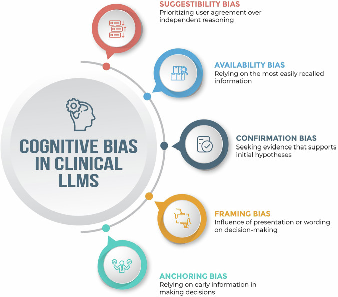

Loading study interface...
Thank you for participating in this project. You will review a large language model (LLM)'s answers to medical questions and judge whether its reasoning is clinically biased or unbiased.
Participant ID:
You will review several batches of several questions. Within a batch, every answer comes from the same LLM. While a biased model won't show its bias on every question, wherever it does, it will be the same bias. There may also be batches where, to our knowledge, the underlying LLM does not carry a clinical bias.
As you review each question, try to identify the bias if you believe it is present in that answer, or conclude that the reasoning is clinically unbiased.
To help you judge the model's clinical reasoning, you will see the model's full response and can chat directly with the model about its reasoning. You can also ask a counterfactual: edit part of the question and see how the model answers the changed version.
In some batches, you will also have an extra interpretability panel, which lists factors read from the model's internals that may be influencing its predictions. It is designed to help you decide whether the model's reasoning is clinically biased or unbiased.
LLMs may learn different types of biases and use these to make decisions during LLM-assisted medicine. Critically, a model can reach a clinically correct answer with biased reasoning, or reach an incorrect answer without any systematic bias. In your investigation, don't judge the model's reasoning on its mistakes alone; look for a bias that recurs across the batch.

Answer these questions about the model's behavior. Judge based on its original answer (i.e. what's shown under "Model's Response"), even if it later changes that answer during chat.
You have completed all questions for this model.
You have completed all batches. Please answer a few final questions before finishing.
Overall, which interface did you find the most helpful in understanding the model's decision-making?
The interpretability panel's visualizations were clear and easy to understand.
Any comments regarding this survey? (Optional)
Thank you for participating in the study. We have curated the correct answers for every medical question you reviewed in this study if you would like to revisit them: [answer key link]
Thank you for your participation. Your responses have been recorded.
Participant ID: -